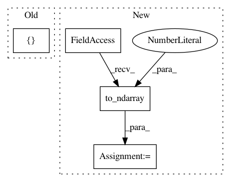

300640c864fedfaba2ff31af360fd975e5db23ee,geomstats/discretized_curves_space.py,L2Metric,exp,#L2Metric#Any#Any#,84
Before Change
if mult_tangent_vecs == 1:
new_shape = [tangent_vec.shape[0], shape_cumprod[-2], n_coord]
else:
new_shape = [shape_cumprod[-2], n_coord]
new_tangent_vec = tangent_vec.reshape(new_shape)
exp = self.embedding_metric.exp(new_tangent_vec, new_base_point)
exp = exp.reshape(tangent_vec_shape)
After Change
Riemannian exponential of a tangent vector wrt to a base curve.
tangent_vec = gs.to_ndarray(tangent_vec, to_ndim=3)
base_curve = gs.to_ndarray(base_curve, to_ndim=3)
n_curves = base_curve.shape[0]
n_sampling_points = base_curve.shape[1]
n_coords = base_curve.shape[2]
n_tangent_vecs = tangent_vec.shape[0]
In pattern: SUPERPATTERN
Frequency: 3
Non-data size: 4
Instances
Project Name: geomstats/geomstats
Commit Name: 300640c864fedfaba2ff31af360fd975e5db23ee
Time: 2018-11-12
Author: alice.le-brigant@enac.fr
File Name: geomstats/discretized_curves_space.py
Class Name: L2Metric
Method Name: exp
Project Name: geomstats/geomstats
Commit Name: d413f239c07d433b6a1ff7735030edc777844584
Time: 2020-04-08
Author: ninamio78@gmail.com
File Name: tests/test_poincare_ball.py
Class Name: TestPoincareBallMethods
Method Name: test_coordinates
Project Name: geomstats/geomstats
Commit Name: 79267833e03d86a10d69e11fc7b4fd3dce83cd72
Time: 2020-02-02
Author: nicolas.guigui@inria.fr
File Name: geomstats/geometry/beta_distributions.py
Class Name: BetaDistributions
Method Name: maximum_likelihood_fit